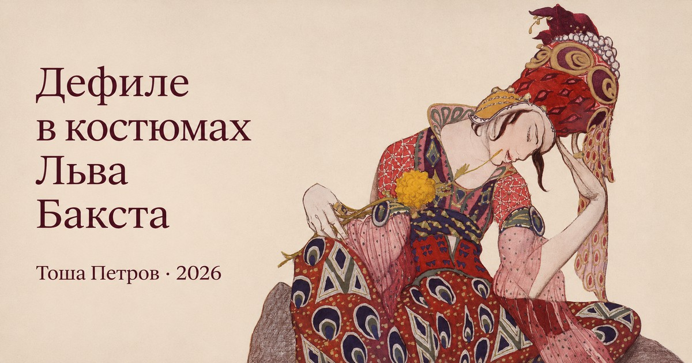
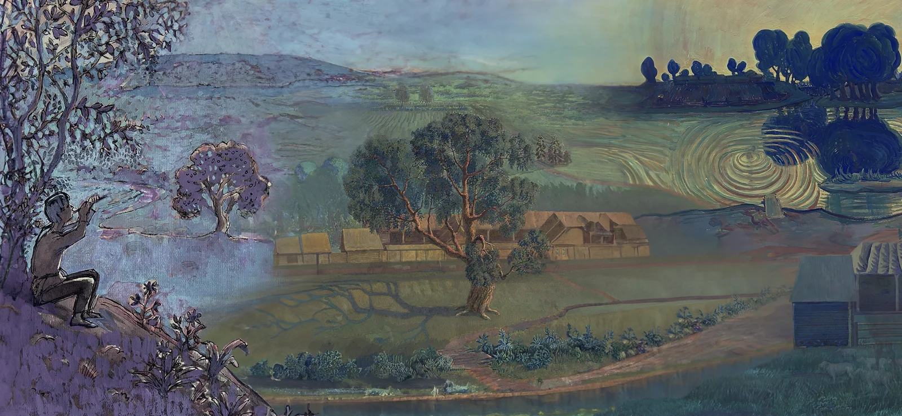
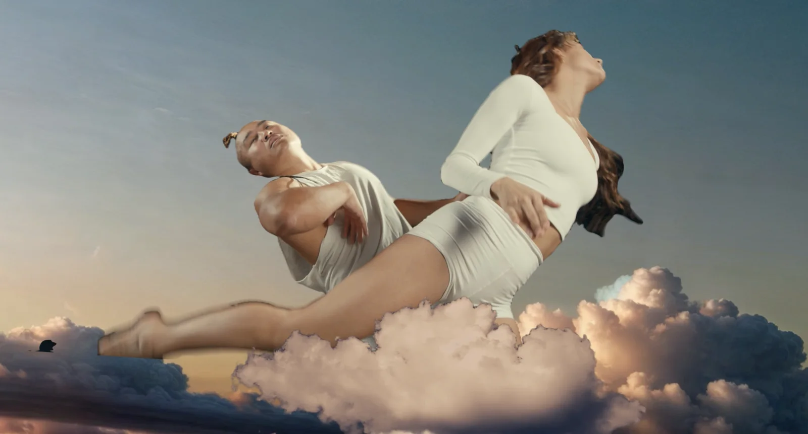

Я был участником арт-группы «Берёзовый промпт». Сейчас группа завершила деятельность.
Музеи и театр Авторские работы Коллаборации Музеи и театр

2026 · Третьяковская галерея, Москва
Десятиминутное видеодефиле: 20 костюмов по эскизам Бакста превращаются в реалистичные наряды и приходят в движение.
Моя роль: визуализация и анимация костюмов, арт-дирекция, сценарий и монтаж. Музыка — Дима Невольник.
Подробнее о проекте →
2025 · Театральная площадка MOÑ, Казань
Живой перформер встречается со своим видеодневником, переосмысленным нейросетями. Записанное движение становится материалом для разговора о памяти.
Моя роль: соавтор проекта, медиахудожник. Режиссёр и драматург — Екатерина Августеняк, перформер — Нурбек Батулла.
Подробнее о проекте →

2024 · КВЦ «Радуга», Чебоксары
Мультимедийная выставка по поэме Константина Иванова: живопись, поэтическое слово, музыка и цифровые технологии.
Моя роль: анимация изображений с использованием нейросетей.
Подробнее о проекте →
Через двести, триста лет 2025 · Молодёжный театр Алтая, Барнаул
Медиахудожник спектакля-инсталляции о будущем, придуманном подростками.
Подробнее →
Конь в истории татар 2024 · Казанский ипподром
Видеоарт с использованием нейросетей.
Узнать подробнее о работе →
Авторские работы
2025 · Выставка «Избыточность», Gazgolder, Москва
Работа об информационном шуме и возможности выйти из бесконечного потребления медиа, чтобы снова услышать себя.
Подробнее о проекте →
2025 · «Поток несовершенства», «Цифергауз», Санкт-Петербург
О событии, которое кажется случайностью, хотя за ним стоит длинная цепь причин и наших собственных действий.
Моя роль в выставке: монтаж всей видеопрограммы из работ участников арт-группы и регулярное тестирование на площадке перед открытием.
Подробнее о проекте →
В потоке 2026 · «Окно в память», КЦ ЗИЛ, Москва
Зацикленная видеоанимация об информационной перегрузке и возвращении к привычному потреблению. Персонажи с головами животных сменяют друг друга внутри рекурсии экранов.
Подробнее →
очевидное/неочевидное 2026 · «У реки два берега», «Коллайдер», Суздаль
Видеоарт для групповой выставки о двойственности восприятия. Также полностью смонтировал видеопрограмму из работ всех участников и плотно работал с куратором.
Подробнее →
Все пацаны попадают в рай 2026 · «Хи-хи ха-ха», «Студия 84», Новосибирск
Работа для групповой выставки о мемах и цифровой культуре.
Подробнее →
Поцелуй 2024 · Видеоарт с использованием нейросетей
Смотреть на Foundation ↗
Цветущий прыжок 2024 · Видеоарт с использованием нейросетей
Смотреть на Foundation ↗
Коллаборации и перформансы

2024 · Lenovo Yoga / Snapdragon X Elite
Фильм Пола Трилло и makeitrad с танцовщиками HOK (Хокуто Кониси) и Эрикой Кляйн. Снятый танец переходит в облачные фигуры и сгенерированные пространства.
Моя роль: дополнительная анимация в составе команды. В титрах — StLaurentJr.
«Танец облаков»: публикация о работе ↗
Подробнее о проекте →
SPEECH-TO-ART / ЦИПР 2026 · Нижний Новгород
Визуальный перформанс по приглашению Института визуальных искусств: создание образов в реальном времени во время сессии.
Подробнее →
OUTLINE 2025 · Фестиваль OUTLINE
Мэппинг на здание.
Подробнее →
НУР 2025 · NUR NOW × T2, Казань
Участие в выставке в составе арт-группы «Берёзовый промпт».
Подробнее →
Все выставки и проекты →